PHOTOGRAPHY
ANNE x LAURA

ANNE x LAURA
Anne Cazé is a professionnal make up artist, her speciality is the body
panting. For this project she needed a photographer to highlight her work with a minimalist staging. All eyes on a model enhanced by the make up. The shooting was made in a photo studio based in Cergy, near from Paris, for a webmagazine
Canon 7D With Tamron Lens 18-135mm With 2 Light spots, then lightroom and photoshop.
10.2016.
By Hao ikki.
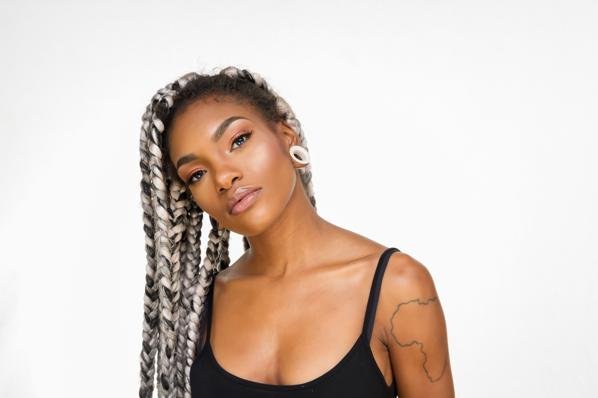

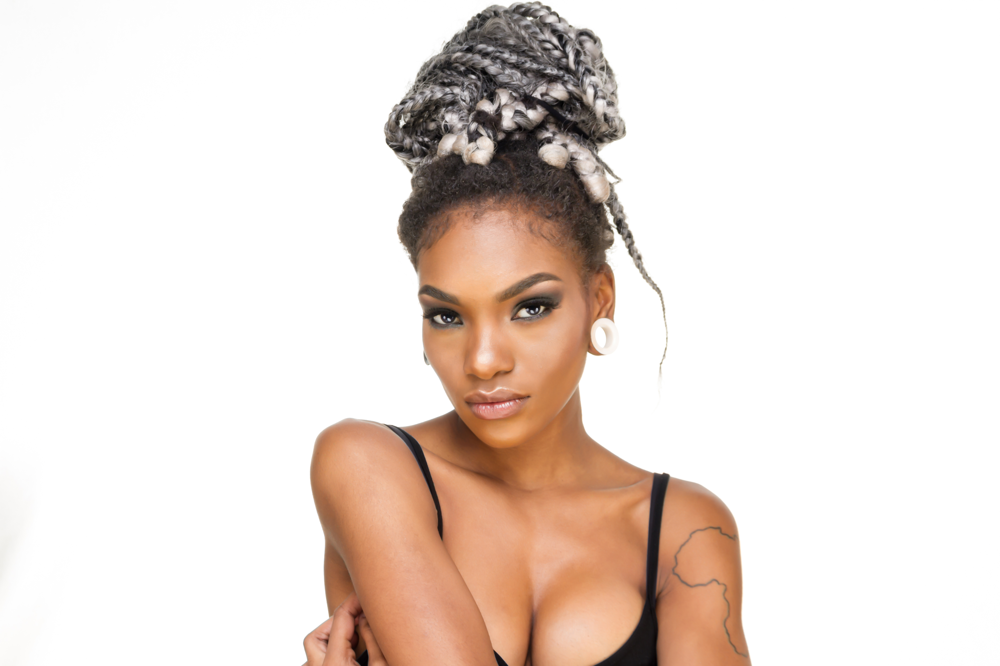
LINDSAY

LINDSAY
Lindsay is the professionnal hip hop dancer, she wanted to develop her image on social network. 'Ahmaislis', a talented communicanting and blogger, respond to the problem by a fashion shooting with some important brand like Eleven Paris, Princesse TamTam or Vans. this photo shoot was to contrast with the actual image of hip hop dancer and give a fresh new vision of Lindsay. At La fidélité a restaurant based in Paris.
Canon 7D With Tamron Lens 18-135mm With cobra flash And one assistant Milan gst. Then lightroom. 11.2016
By Hao ikki.


PHOTOMATON
PHOTOMATON
Photomaton is a gallery of picture, portrait, lifestyle. You can see the world through my eyes now.
By Hao ikki.
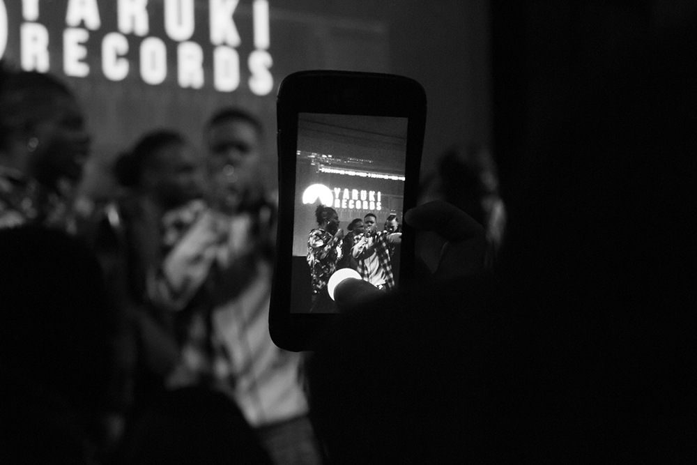
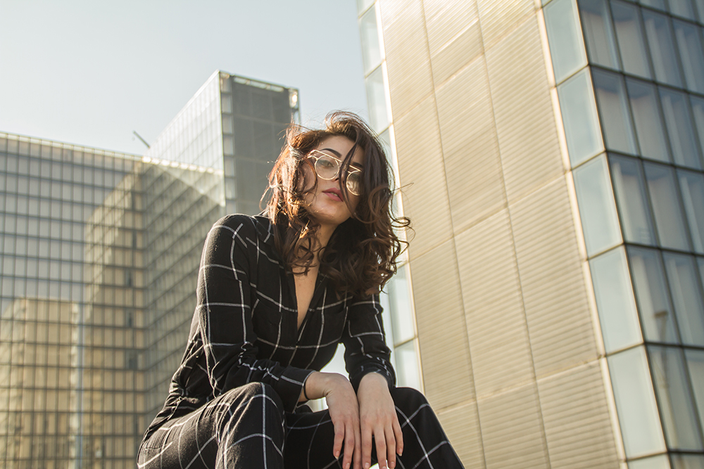
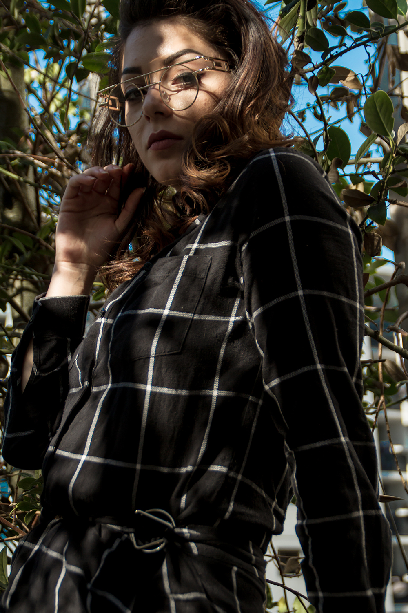
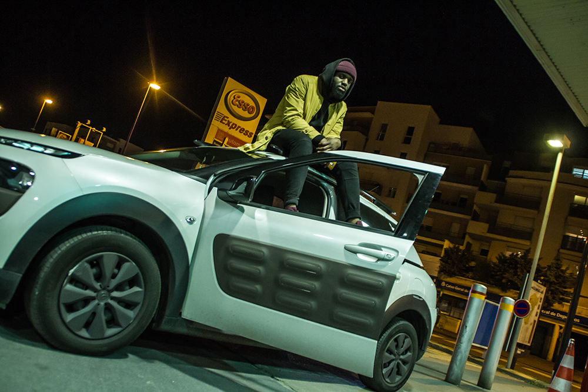
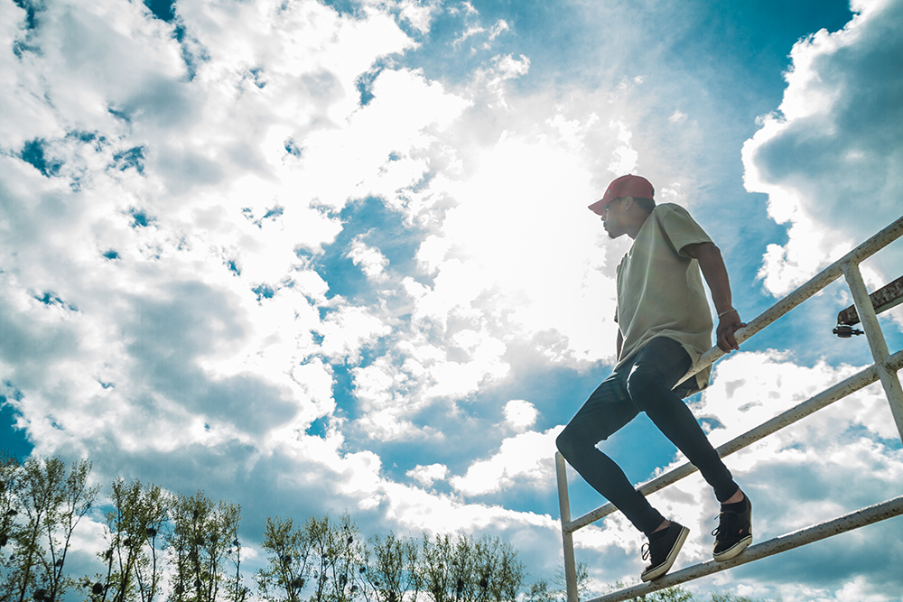
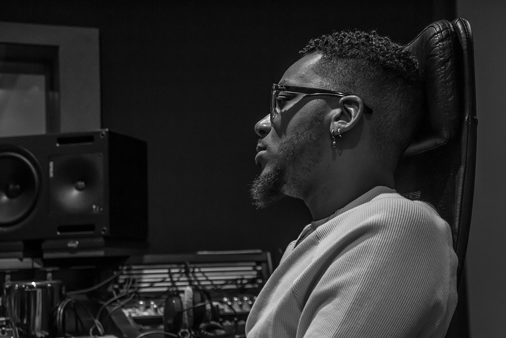
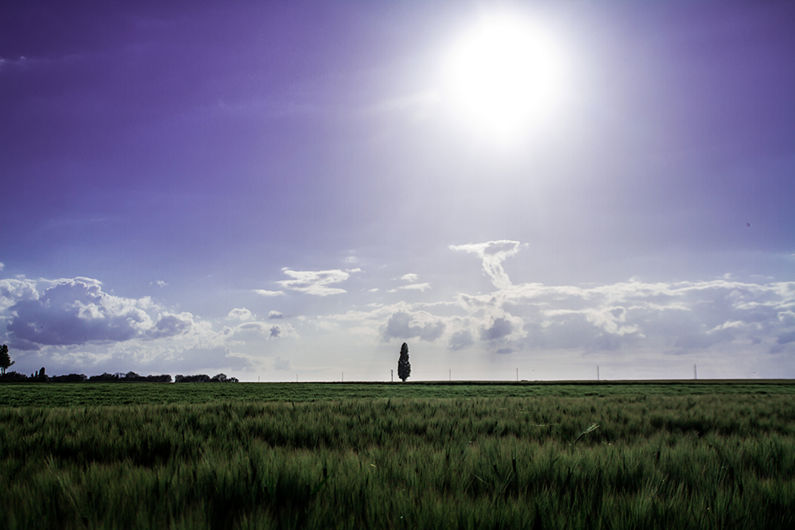
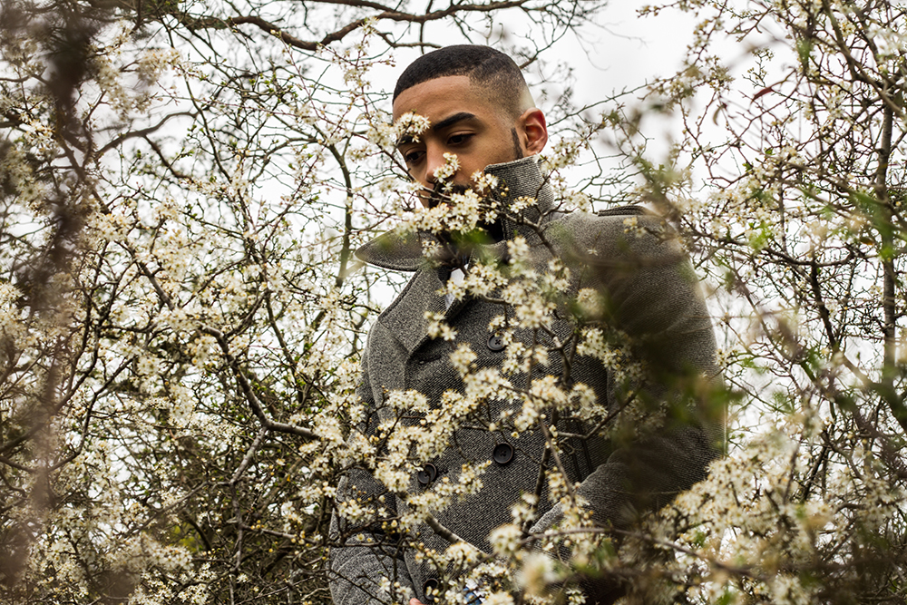
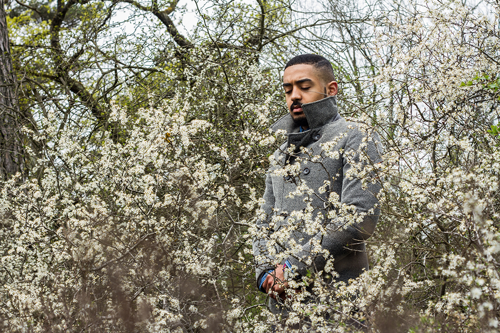